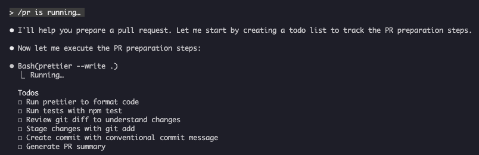

Slash commands are typed shortcuts — starting with / — that control Claude Code's behavior during an interactive session, from built-in actions like /clear to custom workflows you define yourself.
Inside a Claude Code session, typing / opens a menu of commands. They are the quickest way to steer a session — switching models, clearing context, reviewing changes, or kicking off a multi-step workflow — without writing a full prompt. There are 60+ built-in commands; type / followed by any letters to filter the list.
Not every slash command is the same kind of thing. They come from four sources:
| Type | Examples | Where it comes from |
|---|---|---|
| Built-in | /help, /clear, /model, /init, /rewind | Ship with Claude Code |
| Skills | /commit, /optimize, /pr | User-defined SKILL.md files |
| Plugin commands | /review-pr, /deploy | Installed plugins |
| MCP prompts | /mcp__github__list_prs | MCP servers |
Custom slash commands have been merged into skills. Older files in .claude/commands/ still work, but the recommended way to create a new command is a skill: a folder with a SKILL.md file whose name becomes the /command-name. Skills can do more than legacy commands — bundle scripts and templates, accept arguments, and even be auto-invoked by Claude when relevant.
A custom /pr command can walk through an entire pull-request checklist — formatting code, running tests, reviewing the diff, and writing a conventional commit message — all from two keystrokes:

The /pr command running: Claude builds a todo list and works through the PR preparation steps.
Slash commands are like the speed-dial buttons on a phone. Instead of typing out a full request every time, you press one shortcut and a whole routine happens. Some buttons are pre-set by the manufacturer (built-in), and some you program yourself for the calls you make often (skills).